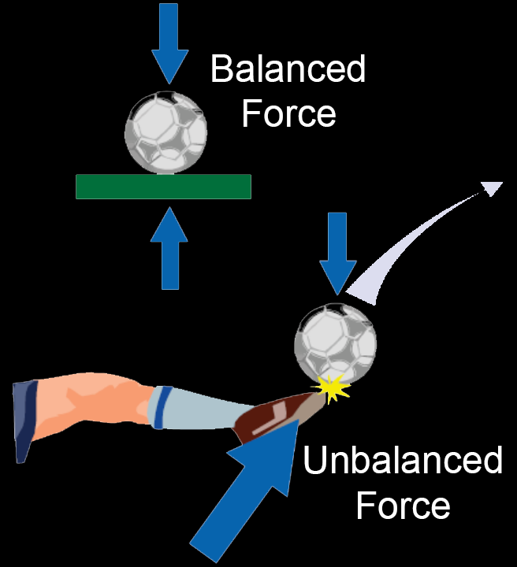

Newton's First Law states that objects at rest remain at rest and objects in motion remain in motion in a straight line unless acted upon by an unbalanced force.
This law is sometimes referred to as Galileo's law of because Galileo discovered the principle of inertia.
This law simply points out that an object at rest, such as a rocket on a launch pad, needs the exertion of an unbalanced force to cause it to lift off.
The amount of the thrust (force) produced by the rocket engines has to be greater than the force of gravity holding it down.
As long as the thrust of the engines continues, the rocket accelerates.
When the rocket runs out of propellant, the forces become unbalanced again.
This time, gravity takes over and causes the rocket to fall back to Earth.
Following its landing in multiple pieces, the rocket is at rest again, and the forces are in balance.

The imteresting part of this law that has enormous implications for spaceflight.
When a rocket reaches space, atmospheric drag (friction) is greatly reduced or eliminated.
Within the atmosphere, drag is an important unbalancing force.
That force is virtually absent in space. A rocket traveling away from Earth at a speed greater than 11.186 kilometers per second (6.95 miles per second) or 40,270 kph (25,023 mph) (Earth's escape velocity) will eventually escape Earth's gravity.
It will slow down, but Earth's gravity will never slow it down enough to cause it to fall back to Earth.
Ultimately, the rocket (actually its payload) will travel to interplanetary space , or depending on the speed, the stars with additional rocket thrust will be needed.
Its inertia will cause it to continue to travel outward.